Aerospace Engineering | MIT Class of 2027
May 2026
The Unified Engineering Flight Competition (UEFC) is one of the final projects of MIT's Unified Engineering courses. Teams design and build RC aircraft optimized for a complex scoring metric combining speed flight performance with payload positioning. Our team developed an optimizer to identify promising values for aspect ratio, wing area, and velocity, then validated the design using vortex lattice analysis. We prioritized a robust, predictable aircraft design over an aggressive design, ensuring reliable performance while remaining competitive.
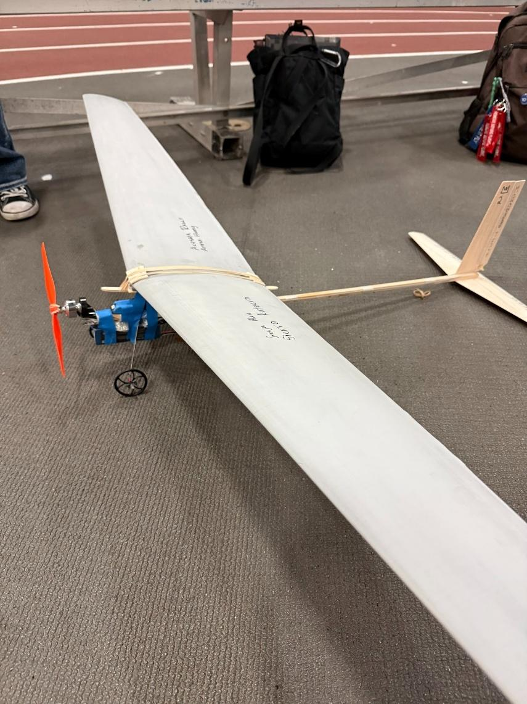
April 2026
The JetJoe Lab is one of the final projects of MIT's Unified Engineering courses, covering modeling and analysis, engine assembly, and operation of a small-scale gas turbine jet engine. We used the JetJoe JJ-1400 model jet engine kit and worked in teams to establish an aero-thermodynamic performance model of the jet engine and estimate performance based on geometry information and component performance assumptions. The jet engine was then tested on an experimental test stand to assess real performance, validating our thermodynamic predictions.
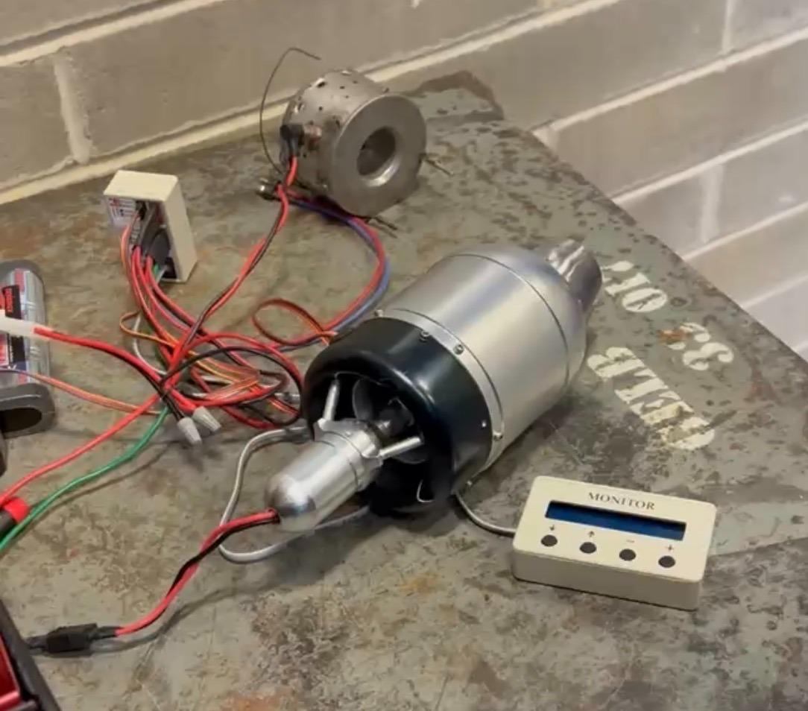
April 2026
The Shirvan Group is developing a system to test Nuclear Thermal Propulsion (NTP) fuels, which are critical for advancing the future of spaceflight. NTP systems offer a more efficient propulsion mechanism by using a nuclear reactor to heat a lightweight propellant like hydrogen instead of relying on chemical combustion. This process greatly increases the specific impulse of conventional rockets. This project involves designing, constructing, and testing a hydrogen gas system that will be installed in the MIT Reactor. The work combines hands-on engineering with system-level testing, acting as a practical learning opportunity to support the development of next-generation nuclear propulsion technology for space exploration.
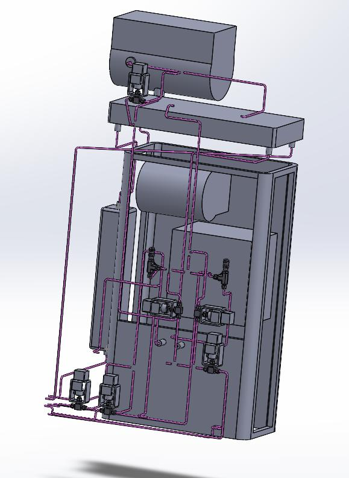
May 2025
Project Aurora is a 10-foot-tall, single-stage rocket developed by the MIT Rocket Team to compete in the Spaceport America Cup, aiming for a 30,000-foot altitude (recently achieving ~14,000 ft). The project features in-house designed composite fins, reefing parachutes, and a SRAD (Student-Researched And Designed) solid rocket motor. The aerodynamics team focused on comprehensive analysis including fin can assembly, stability analysis, load testing, flutter analysis, and manufacturing optimization.
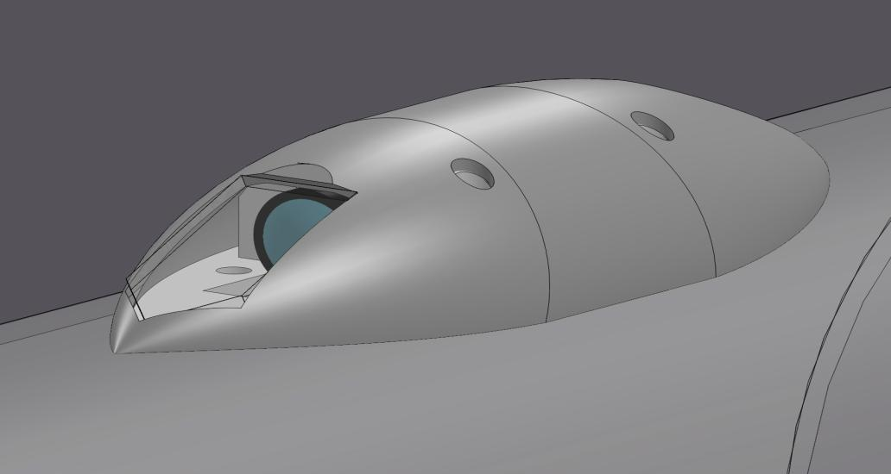
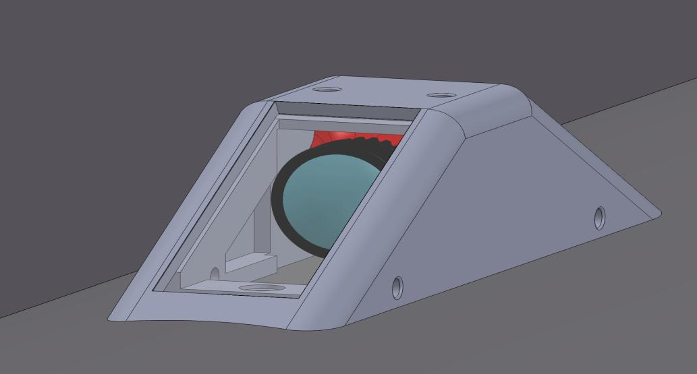
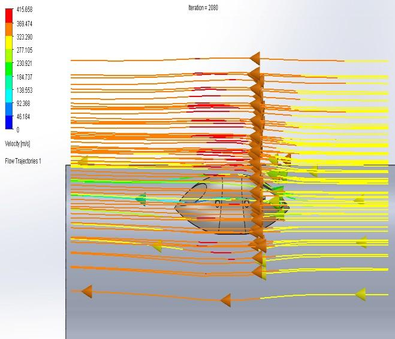
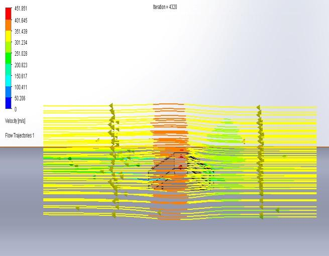
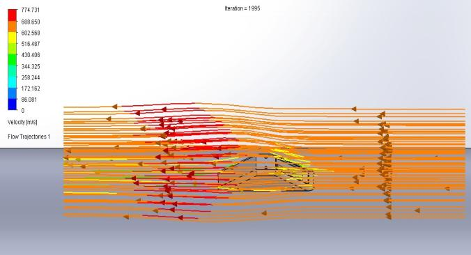
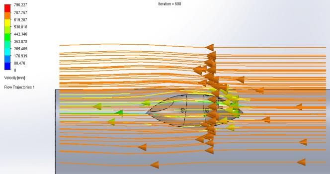
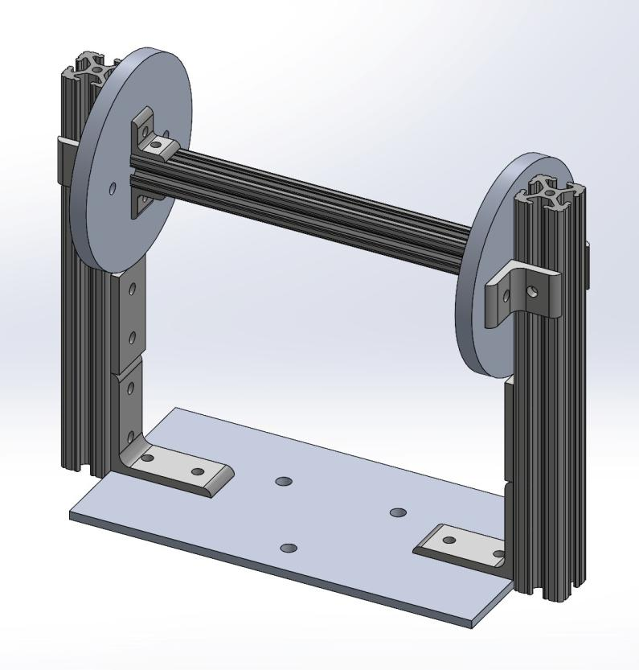
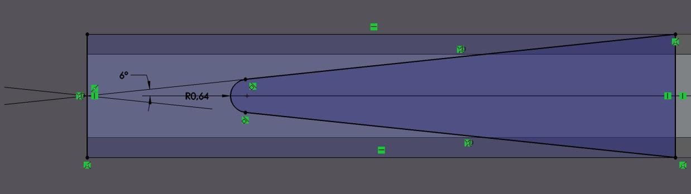
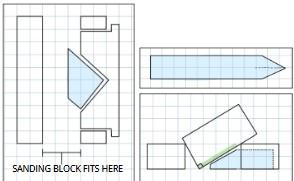
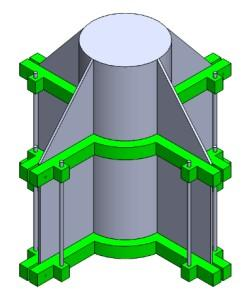
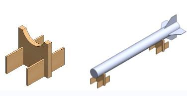
December 2025
The MIT STAR Lab (Stellar Astrophysics and Research Laboratory) developed BeaverCube, an artificial intelligence-equipped nanosatellite cube designed for advanced space research. As part of the engineering team, I contributed to the redesign and refinement of multiple components to improve overall system performance, manufacturability, and reliability. The project involved comprehensive 3D modeling, structural analysis, and system integration planning.
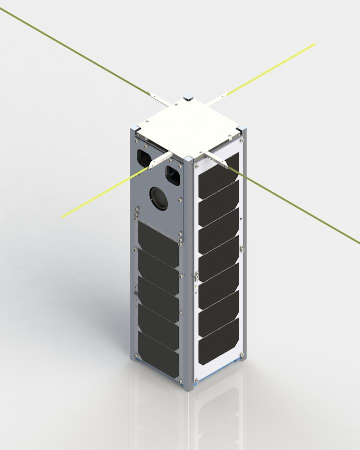
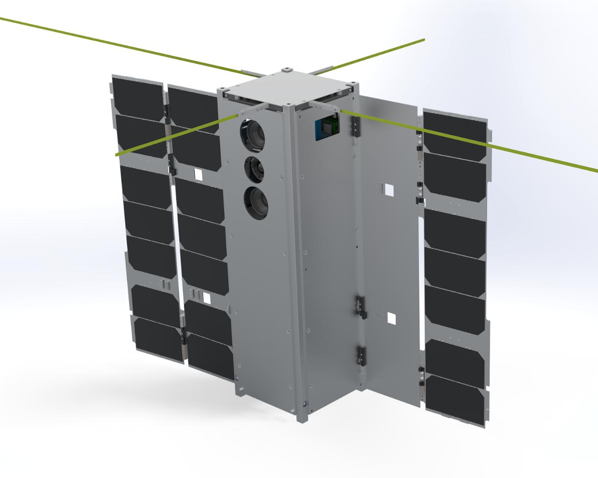
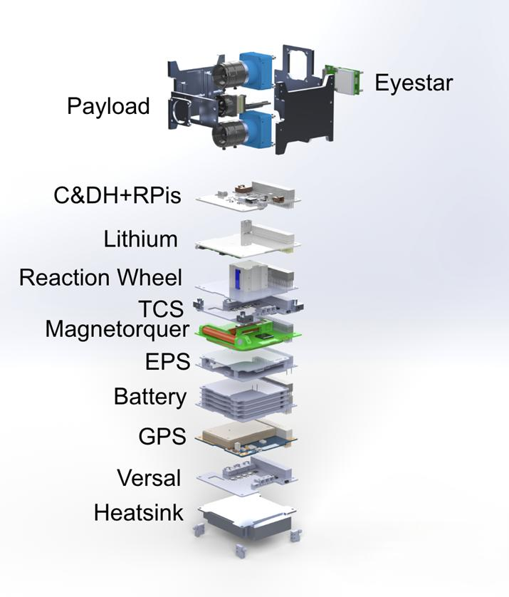
May 2024
Research project on novel multiport DC-DC converter topologies for efficient power management in distributed energy systems. Presented findings at the University of North Texas Scholar's Day Conference with both individual and group poster presentations.
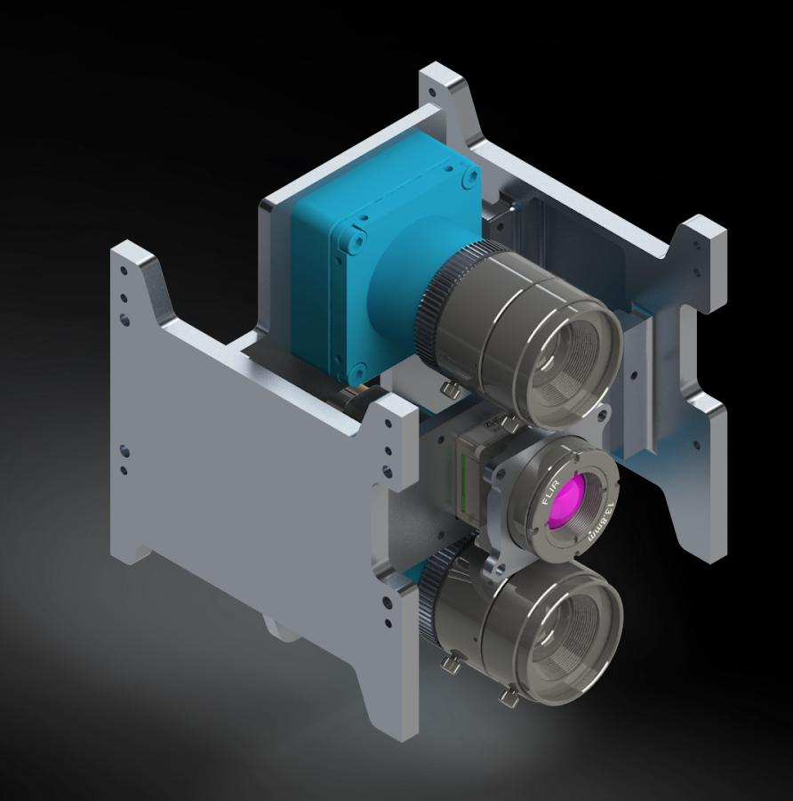
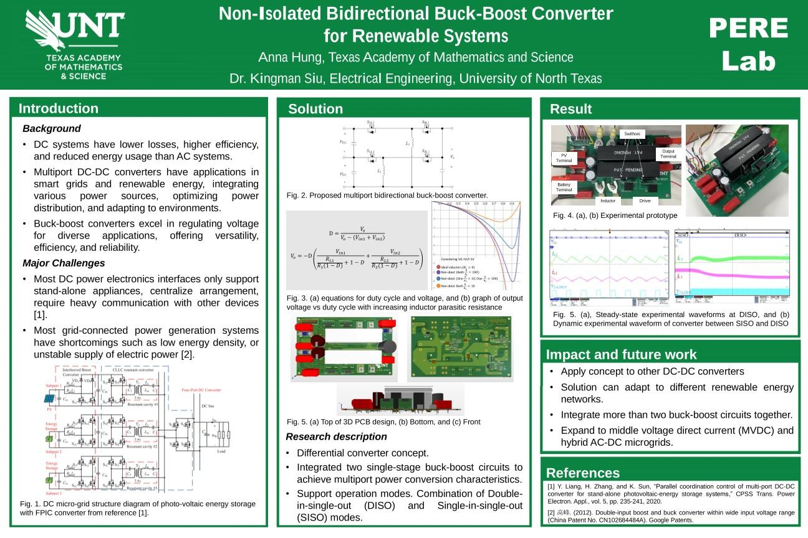
I'm an Aerospace Engineering student at MIT graduating in Spring 2027. With hands-on experience in aircraft design, rocket propulsion systems, and thermal-nuclear propulsion, I'm passionate about advancing space exploration and aerospace technology.
I combine rigorous theoretical analysis with practical engineering, using tools like CFD, finite element analysis, and thermodynamic modeling to solve complex design challenges. I'm currently seeking full-time positions in aerospace engineering starting after graduation.
CFD (SolidWorks Flow Simulation), FEA, Vortex Lattice Method, Thermodynamic Modeling, Mean-line Analysis, Fluid Systems Analysis
SolidWorks (Modeling, Assembly, Simulation, Pipe Routing), CAD/CAM Design, Technical Documentation
Aerodynamics, Propulsion Systems, Thermodynamics, Structural Analysis, Flight Dynamics, Fluid Systems Design, Hydrogen Systems
Nuclear Thermal Propulsion, Gas Turbine Engines, Hydrogen Leak Detection, Pressure Control Systems, Safety Systems
Aircraft Design, Rocket Systems, Gas Turbine Engines, Nanosatellites, System Testing, Embedded Systems (Raspberry Pi)
Power Electronics (DC-DC Converters), System Integration, Technical Presentation, Team Leadership